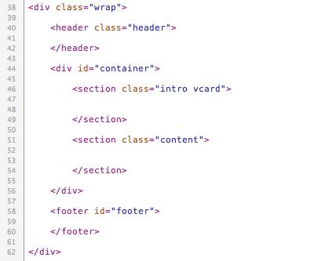

Created: 03/03/2011
By: ninetydegrees.co
Email: hello@ninetydegrees.co
Thank you for purchasing my theme. If you have any questions that are beyond the scope of this help file, please feel free to email via my user page contact form here. Thanks so much!
This theme is a simple 1 column layout. It is also a 1 page theme - the content for every tab is stored within index.html. The main content is within a section with the class "content". The main headings sit within the header tag, the introductory content (avatar / bio) are within a section with the class "intro" and the footer contents sit inside the footer tag.
Here's the general HTML structure:
If you would like to edit the color, font, or style of any elements in one of these columns, you would do the following:
.content a {
color: #someColor;
}
If you find that your new style is not overriding, it is most likely because of a specificity problem. Scroll down in your CSS file and make sure that there isn't a similar style that has more weight.
I.E.
.wrap .content a {
color: #someColor;
}
So, to ensure that your new styles are applied, make sure that they carry enough "weight" and that there isn't a style lower in the CSS file that is being applied after yours.
There are several css files included with vCard. They are all identical except for the colour options they create. Default.css is loaded by default which is the creamy "Cappuccino" colour theme.
The rest of the css files should be self explanatory as to which colour scheme they load.
To change the colour scheme you need to open up index.html and look at line 26 where default.css is referenced. To change the colour scheme simply replace default.css with one of the other stylesheets, for example blue.css which will load the blue colour scheme.
vCard also uses a Custom Google font in the header. This can easily be changed. You can find a full list of available Google fonts here with instructions on how to install them. Just remember to remove the reference to the Lobster font from index.html on line 23 and replace it with your preferred choice.
This theme imports several Javascript files.
There are no PSD files with vCard simply because all the delicious styles have been created purely with CSS3. That means the entire look and feel can be adjusted via the stylesheet without having to open a hefty image editing application
vCard comes with a fully functional AJAX contact form baked-in which you will need to configure.
There's only one step - change the email address so that all contacts are sent to you and it's done like so:
Open up contact.php and on line 3 change you@yourdomain.com to your email address then save the file
vCard has full mobile support right out the box. There's nothing you need to do to activate or configure this. There are 3 views.
You should just be aware of how to target specific devices.
To edit styles for the default desktop / iPad view open default.css and look for line 422. This is where the bulk of the themes style is located and is the best location to add styles which you want to affect every device.
Scroll down to line 835 and you'll see a media query for landscape mobile devices. If you want to add styles which only appear when someone is browsing on an iPhone in landscape mode, add them here.
Finally scroll to line 892 and you'll see another media query for mobile devices in portrait mode. If you want to add styles which only appear when someone is browsing on an iPhone in portrait mode, add them here.
I've used the following images, icons or other files as listed.
Once again, thank you so much for purchasing this theme. As I said at the beginning, I'd be glad to help you if you have any questions relating to this theme. No guarantees, but I'll do my best to assist. If you have a more general question relating to the themes on ThemeForest, you might consider visiting the forums and asking your question in the "Item Discussion" section.